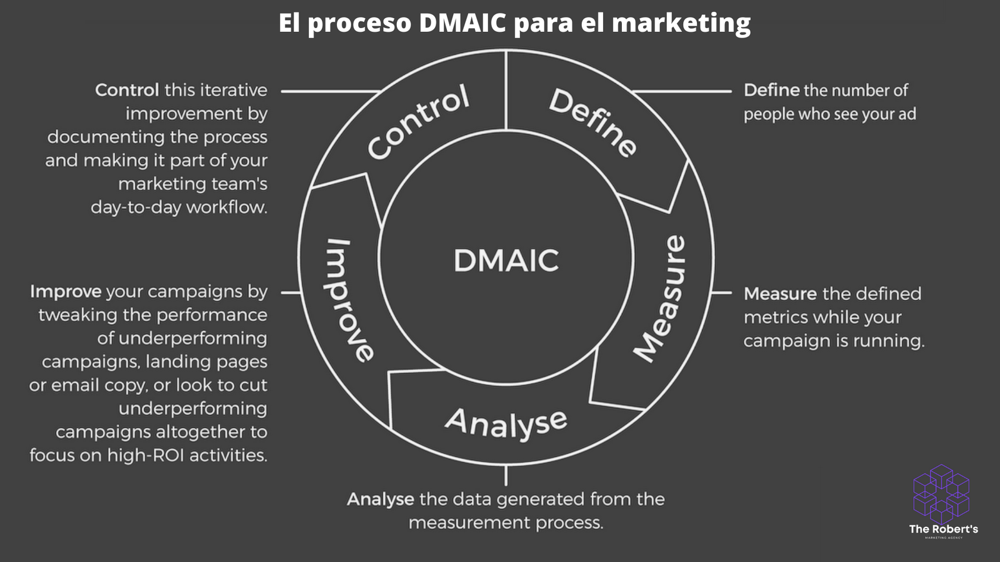

Crear su presupuesto de marketing es un poco más complicado que solo destinar dólares a diferentes costes o campañas. Querrás centrarte en estos cinco pasos:
Determina el objetivo de tu negocio y su métrica True North
Comprende tu embudo de ventas
Cuantifique sus costes operativos
Tener en cuenta todos los costes promocionales relacionados con el producto
Medir y realizar un seguimiento del retorno de la inversión
Echemos un vistazo más profundo a cada uno.
1. Determina el objetivo de tu negocio y su métrica True North
Cada presupuesto de marketing sólido comienza con el objetivo empresarial de primera línea. ¿Qué es el éxito de su negocio?
Una vez que sepa lo que significa el éxito para su negocio, puede determinar su métrica True North; la única métrica que, si aumenta, logrará ese objetivo.
Este paso inicial es crucial porque todo lo que hay después siempre debe estar relacionado con ese objetivo. Si tu plan de marketing y los gastos presupuestados no mueven la aguja para tu métrica True North, ¿deberías hacerlos?
2. Comprende tu embudo de ventas
Su embudo de ventas describe cómo mueve a los visitantes a través de las diversas etapas del proceso de compra para convertirse en clientes generadores de ingresos.
Debería costar menos dinero generar prospectos generales o visitantes del sitio que estén en la parte superior del embudo, más lejos de hacer una compra, y aún no se hayan convertido en clientes potenciales cualificados.
Por el contrario, debería costar más generar clientes potenciales altamente cualificados que sean más bajos en el embudo de ventas y estén listos para comprar.
Su objetivo siempre debe ser optimizar su embudo de ventas poniendo las campañas, los materiales de marketing, el contenido y los argumentos de venta adecuados frente a los visitantes o clientes potenciales adecuados, dependiendo de dónde se encuentren en el proceso de compra.
Si lo haces con éxito, puedes conocer dos datos cruciales sobre tu embudo de ventas:
El coste de adquirir un prospecto, visitante o cliente potencial en cada etapa.
La tasa de conversión de cada etapa en clientes generadores de ingresos.
Ahora puede maximizar el rendimiento de su presupuesto de marketing creando campañas dirigidas a clientes potenciales en la etapa del embudo con el mayor retorno de la inversión.
3. Cuantifique sus costes operativos
La cantidad que pagas por cada clic en una campaña publicitaria de CPC es solo un coste relacionado con el marketing. También puede tener costos operativos de naturaleza más fija para los que su empresa necesita presupuestar, independientemente del tamaño de su marca o de las campañas específicas del producto:
Sueldos de empleados/contratistas y gastos relacionados
Herramientas de marketing por correo electrónico y software de CRM
Registro y alojamiento de dominios en sitios web
Herramientas y gastos relacionados con el SEO
Ya sea que gaste 20 000 $ o 200 000 $ en una campaña publicitaria, tendrá que tener en cuenta estos gastos en su mayoría fijos solo para mantener las luces de sus equipos de marketing encendidas.
4. Tener en cuenta todos los costes promocionales relacionados con el producto
Cuando se prepara para el lanzamiento promocional de un nuevo producto, es fácil olvidar cualquier gasto en el que incurrió en los meses anteriores preparándose para el lanzamiento.
Estudio de mercado
Grupos de discusión para generar comentarios de los clientes
Pruebas para desarrollar los mensajes de campaña perfectos
Todos estos gastos tienen en cuenta su coste total de marketing, aunque es posible que no aparezcan directamente en el presupuesto de su campaña activa.
5. Medir y realizar un seguimiento del retorno de la inversión
Su negocio siempre debe estar buscando mejorar su ROI de marketing para obtener una mejor relación calidad-precio. Una parte clave de eso es la medición y el seguimiento frecuentes del rendimiento de la campaña.
Six Sigma es un conjunto de técnicas que se centran en la mejora de procesos, y una parte integral de la metodología Six Sigma es este proceso de refinamiento continuo y mejora de la calidad conocido como el Proceso DMAIC:
Defina la métrica True North y el KPI que vinculan los esfuerzos de su equipo de marketing a los objetivos de su negocio.
Mide las métricas definidas mientras se ejecuta tu campaña.
Analizar los datos generados por el proceso de medición.
Mejore sus campañas ajustando el rendimiento de las campañas de bajo rendimiento, las páginas de destino o el texto del correo electrónico, o busque reducir por completo las campañas de bajo rendimiento para centrarse en actividades de alto ROI.
Controla esta mejora iterativa documentando el proceso y haciéndolo parte del flujo de trabajo diario de tu equipo de marketing.
